APP抓包配置
[TOC]
1. 安装抓包工具
以 fiddler 为例，其他抓包工具同理。
配置 fiddler
Tools->Options->HTTPS
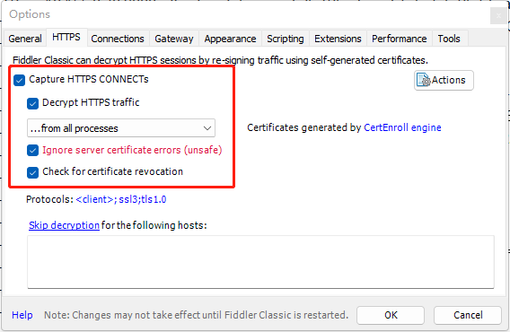
Tools->Options->Connections
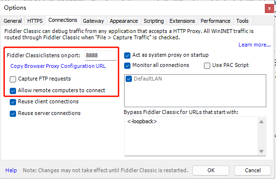
Tools->Options->Appearance（改字体）
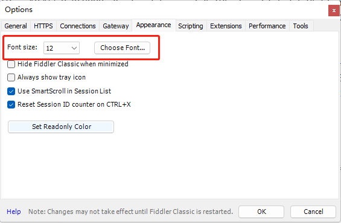
Rules->Customize Rules（添加代码，缓解与 VPN 的冲突）
1
2
3
4
5
6
7
8
9
10
11
12
13
14static function DoReattach(o: Object, ea: EventArgs)
{
ScheduledTasks.ScheduleWork("reattach", 1000, innerReattach);
}
static function innerReattach()
{
FiddlerApplication.UI.actAttachProxy();
}
static function OnRetire()
{
FiddlerApplication.oProxy.remove_DetachedUnexpectedly(DoReattach);
}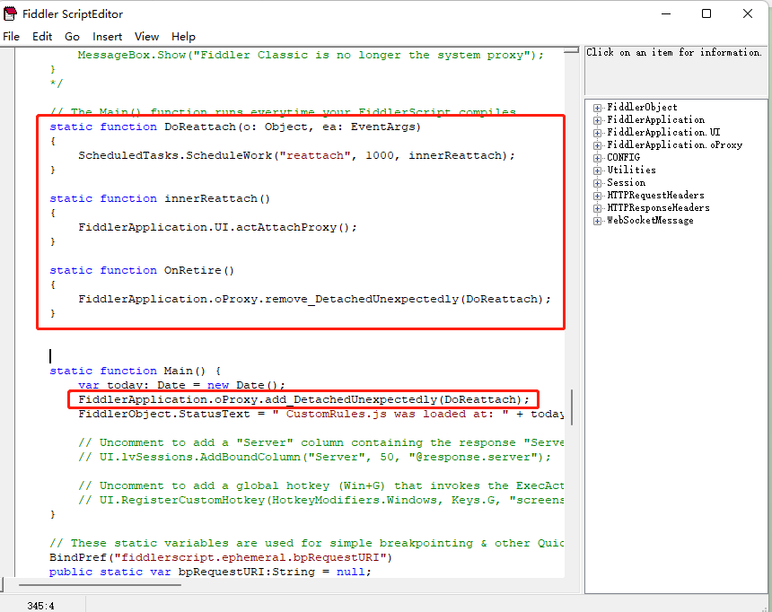
2. 安装证书
adb 安装
1
2
3
4
5adb devices # 查看设备连接状态
adb root # 检查是否有ROOT权限
adb reboot # 重启设备
adb remount # 设置系统文件夹为可写入模式
adb push ab6544ad.0 /system/etc/security/cacerts/ # 复制证书文件到该路径手动安装
从抓包工具下载证书文件，传输到模拟器中，然后复制到 /system/etc/security/cacerts/ 下，注意证书文件名为 pem 证书的 hash 值。
证书验证
打开移动设备的设置>安全性和位置信息>加密与凭据>信任的凭据，看到抓包工具对应的证书即为安装成功。只有将证书安装为系统信任的，才能抓到 HTTPS 的请求。
如果使用真机测试，需要确保设备在同一局域网内。
3. 配置流量转发
下载 Drony
将 Drony 安装到模拟器
使用共享文件夹传输或者直接用内置浏览器下载并安装
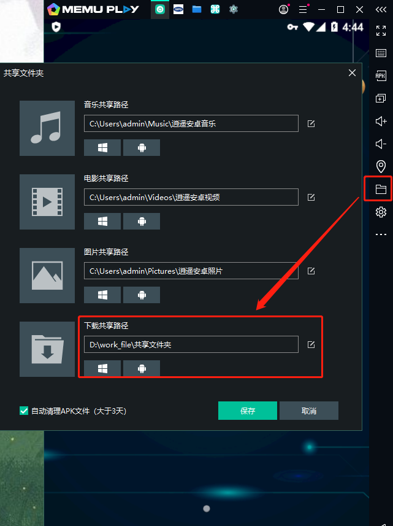
打开 Drony，滑动到页面 SETTINGS，点击 Networks，点击连接的 wifi。
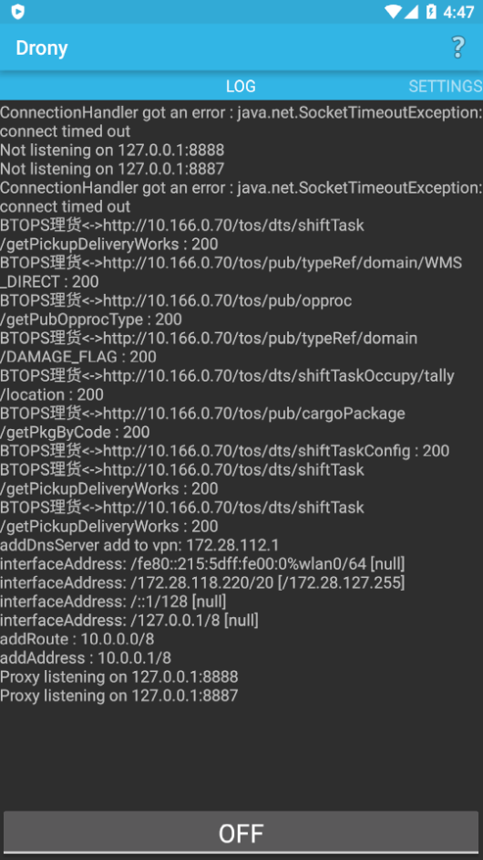
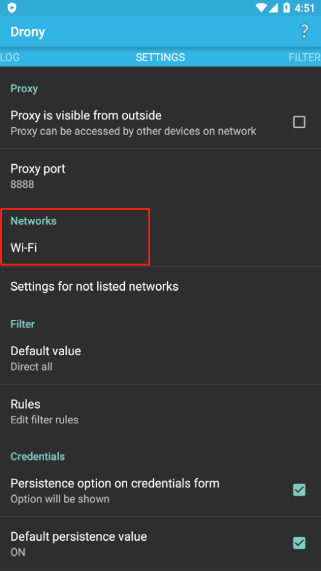
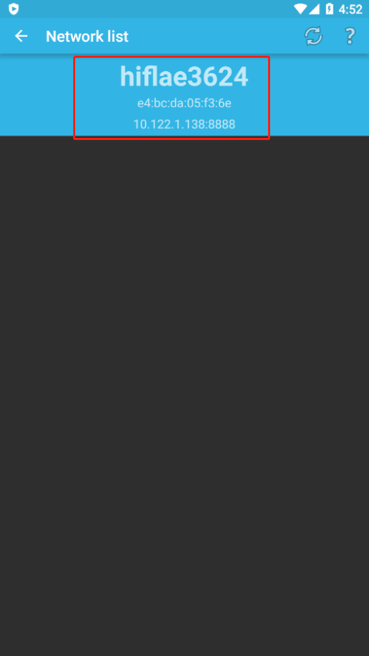
配置网络，需要与抓包工具的 ip 地址和端口号一致。
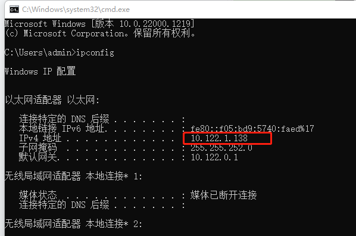
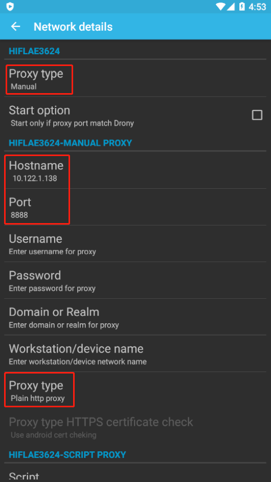
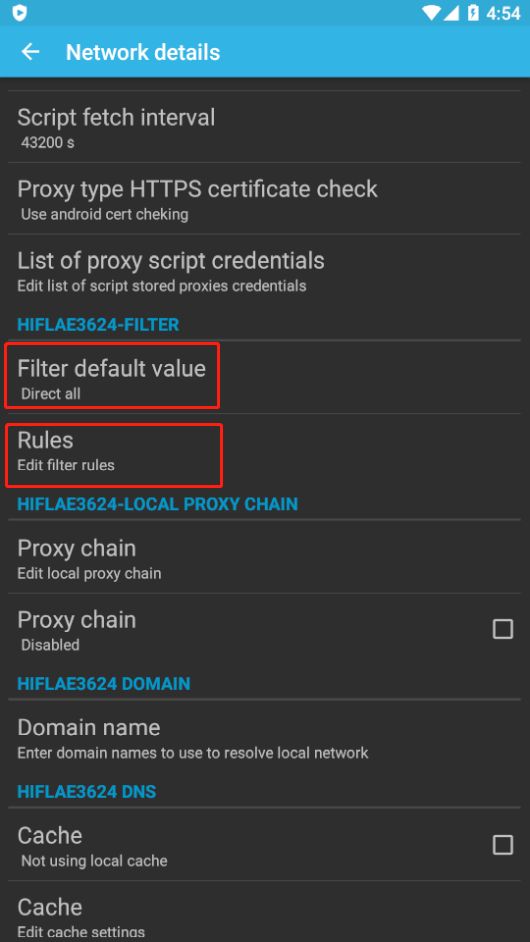
- Proxy type 选择 “Manual”；
- Hostname 输入主机 ip；
- Port 输入 fiddler 的端口（8888）；
- Proxy type 选择 “Plain”；
- Filter default value 选择 “Direct all”，
- 然后点击 Rules。
应用设置
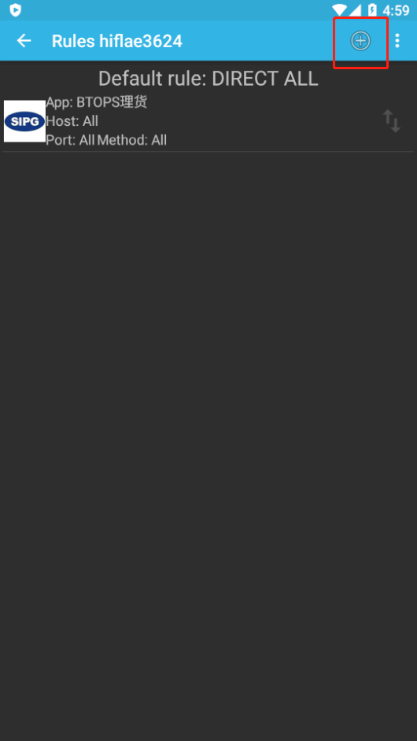
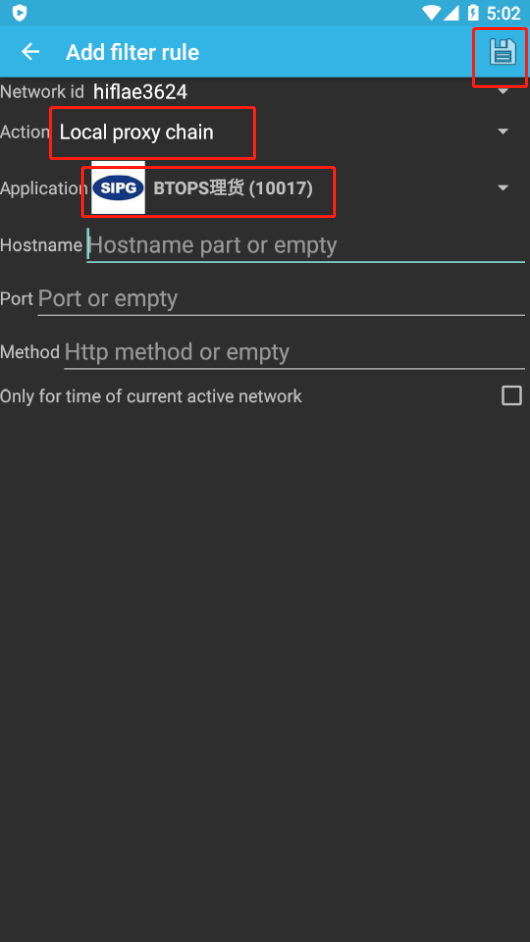
启动流量转发
回到初始页面，点击「OFF」使其变为 “ON” 状态，这样就可以在抓包工具看到 app 的请求。
本博客所有文章除特别声明外，均采用 CC BY-NC-SA 4.0 许可协议。转载请注明来自 浮生孰来！